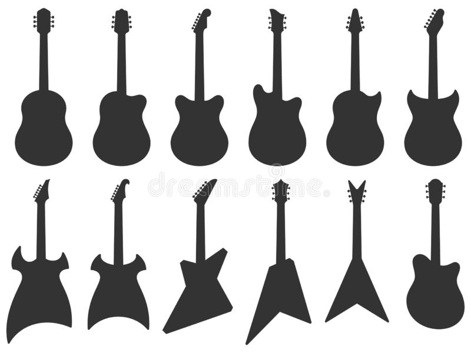
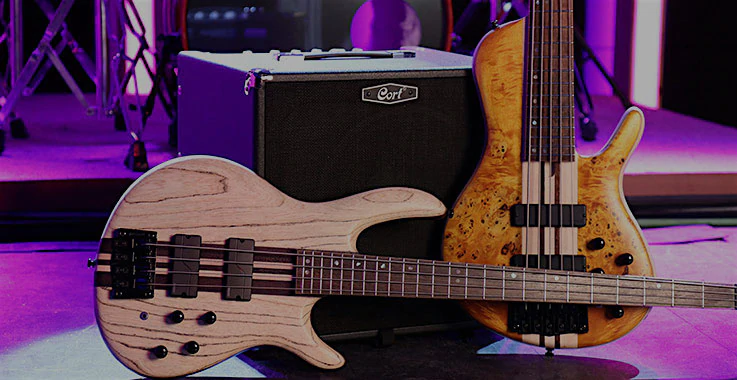

Las Cuerdas
"Tropecé mil veces con la misma cuerda y saqué una gran melodía"
A la hora de hablar de cuerdas en música, se nos viene a la mente instrumnetos tales como: Guitarras, Bajos, Violines etc...
Hay que tener en cuenta que las cuerdas son un elemento de suma importancia a la hora de componer cualquier pieza musical.
En algunas ocasiones estos instrumentos son los que llevan la melodía, ya sean las Guitarras, los bajos, las Arpas, tiples etc... se suelen usar mucho como melodía principal y como acompañamiento para las voces...

Las Guitarras son una de las piezas claves a la hora de hacer música, ella es nuestra compañera ideal para interpretar nuestras propias composiciones, no hay edad para tocarla; lo que se debe tener son ganas para tocarla y aprender, es un instrumento que nos permite explorar un gran número de estilos músicales: blues, rock, pop, reggae, funk, punk, música clásica etc...
Ocultar

El bajo, en líneas generales, es un instrumento que reproduce los sonidos más graves del espectro sonoro de una canción. Al final, su importancia en el compendio musical es que ejerce una armonía con el resto de instrumentos y sirve como base rítmica de una formación, junto, normalmente, con la batería
Ocultar